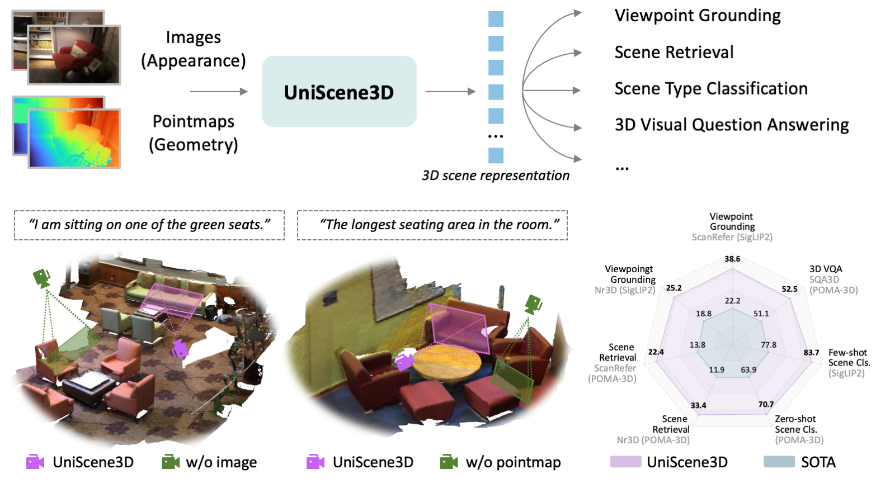
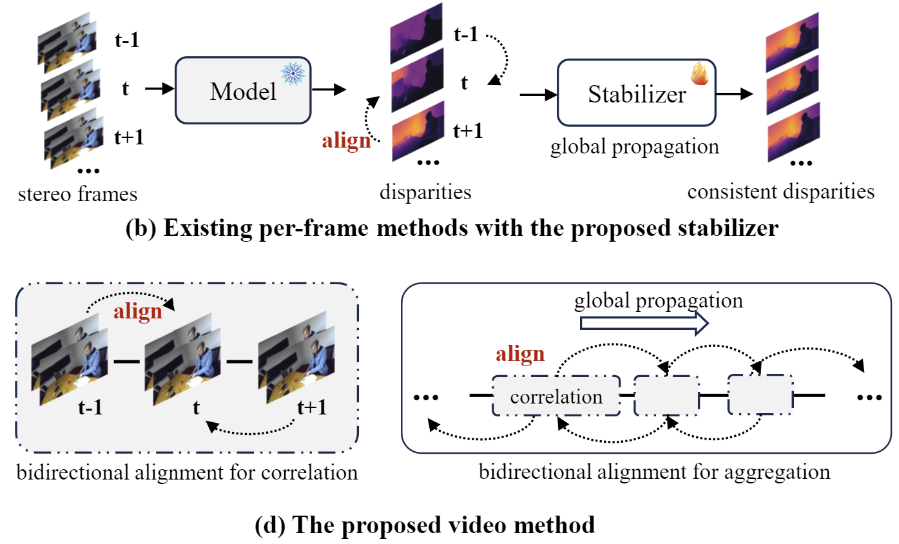
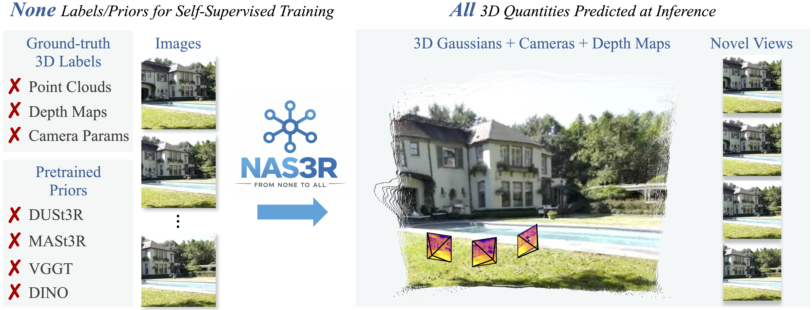
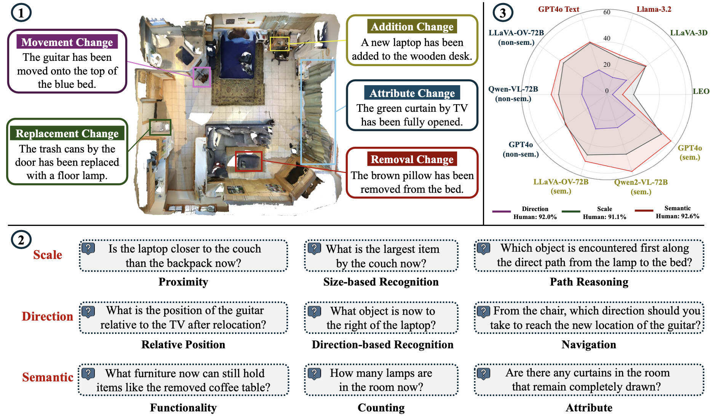
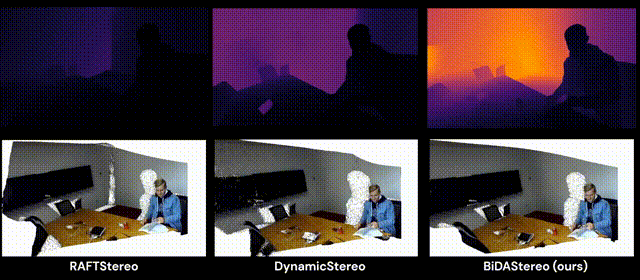
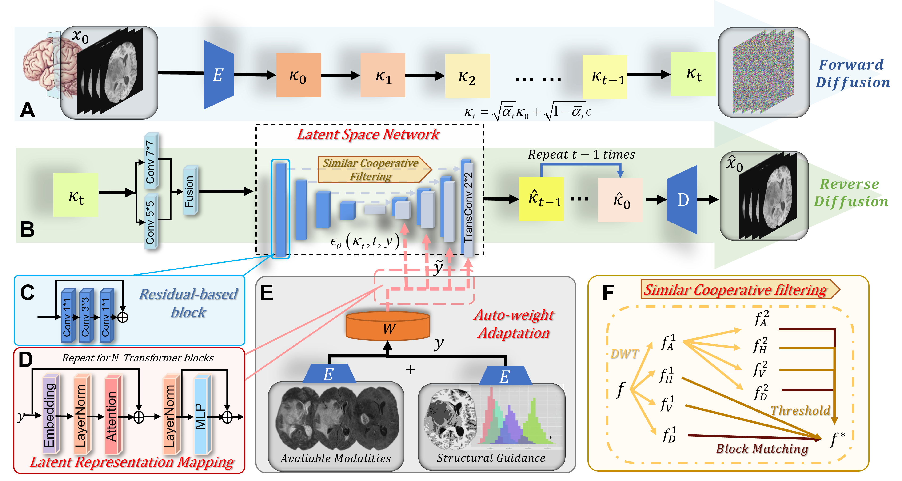

RGB-Pointmap Pretraining for Unified 3D Scene Understanding
Ye Mao, Weixun Luo, Ranran Huang, Junpeng Jing, Krystian Mikolajczyk
I am a final-year PhD candidate in Computer Vision and Machine Learning at Imperial College London, supervised by Prof. Krystian Mikolajczyk and supported by the Imperial President's Scholarship . I am currently a research intern at Meta, working on world foundation models for robot learning. My research develops generalizable geometry-aware models for understanding, reconstructing, and generating the 3D physical world. Before my PhD, I completed master's degrees at the University of Cambridge and Imperial, and a bachelor's degree at King's College London, where I first started programming.
* Equal contribution; † Corresponding author.

Ye Mao, Weixun Luo, Ranran Huang, Junpeng Jing, Krystian Mikolajczyk

Junpeng Jing, Ye Mao†, Anlan Qiu, and Krystian Mikolajczyk

Ranran Huang, Weixun Luo, Ye Mao, and Krystian Mikolajczyk

Junpeng Jing, Weixun Luo, Ye Mao†, and Krystian Mikolajczyk
Ye Mao, Weixun Luo, Ranran Huang, Junpeng Jing, and Krystian Mikolajczyk

Louis Kreitmann, Ye Mao, Ke Xu, Alison Holmes, Karen Brengel-Pesce, Laurent Drazek, and Jesus Rodriguez-Manzano

Junpeng Jing, Weixun Luo, Ye Mao†, and Krystian Mikolajczyk

Ye Mao, Weixun Luo, Junpeng Jing, Anlan Qiu, and Krystian Mikolajczyk

Ye Mao, Junpeng Jing, and Krystian Mikolajczyk

Junpeng Jing, Ye Mao†, and Krystian Mikolajczyk

Ye Mao*, Lan Jiang*, Xi Chen, and Chao Li

Lan Jiang*, Ye Mao*, Xi Chen, and Chao Li

Ye Mao, Ke Xu, Luca Miglietta, Louis Kreitmann, Nicolas Moser, Pantelis Georgiou, Alison Holmes, and Jesus Rodriguez-Manzano